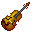
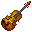
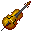
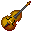
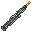
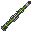
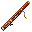

団員募集
明治大学交響楽団は、明治大学唯一の公認オーケストラサークルです。演奏会に向けて、日々練習に励んでいます。練習ではトレーナーの先生をお招きし、指導して頂いています。いずれのトレーナーもNHK交響楽団、読売日本交響楽団、神奈川フィルハーモニー管弦楽団などでプロの演奏活動をしていらっしゃる方々です。
大学生の場合、4年次まで入団することができます。明治大学の学生を中心に活動しています。（※ただし音大生は入団できません）
練習は、主に駿河台校舎10号館で行っています。時間帯は基本的に授業後の18:30〜21:00です。セクションによっては生田校舎や和泉校舎でも練習を行う場合があります。月曜、金曜には全体合奏が行われています。
練習日程はパートによって違いますが、週1〜4程度と様々です。入団前に、パートリーダーが詳しく説明致します。また、こちらからも随時質問等受け付けています。
学校楽器があるパートとないパートがありますので、必ず入団説明の時などに聞いてください。
各パート募集状況（2017/3/3更新)
| 【パート】 | 初心者について | 乗り番 | 最大可能人数 | 学校楽器 | 備考 |
|---|---|---|---|---|---|
|  ヴァイオリン |
大歓迎(トレーナーの先生に習うこともできます) | 経験者は6月演から。初心者は相談 | 15〜20人 | すべて貸し出し中です。 | 自分の楽器を持っていない方は、いずれ購入していただきます。 |
|  ヴィオラ |
大歓迎 | たくさん(6月演から) | たくさん | 2本 | 経験者はもちろん、初心者、ヴァイオリンからの転向も待ってます！ |
|  チェロ |
大歓迎！ | 経験者は6月演から、初心者は12月演から乗り番があります | たくさん | ２本。1本は状態は悪いです。 | 学年問わず大歓迎です！オケをやっていた方、これからやりたい方などいつでもお気軽にどうぞ！ |
|  コントラバス |
要相談 | 6月演からあります！ | 2人 | 2台 | 学校楽器はありますが、弓は個人持ちになります。 |
| 【パート】 | 初心者について | 乗り番 | 最大可能人数 | 学校楽器 | 備考 |
フルート |
不可 | アシスタントの可能性はありますが、6月演からあります! | 3人。入団希望者の意思によって前後します | ピッコロが2本。フルートはないです | ピッコロが吹ける方優先します。新2年生募集です!!! |
|  オーボエ |
不可 | 6月演からあります | 3人 | 1本 | - |
|  クラリネット |
原則不可(人数により要相談) | ６月演からあります | 3~4人(4人の場合は6月演は1人降り番) |
A管・E♭管１本ずつ、Bass２本あります。 | B♭管の購入が必要です。A菅を持っているとなお良いです。新規購入・レンタル等気軽にご相談ください♪ |
|  ファゴット |
不可 | 6月演からあります | 3人 | 1本 | my楽器もち、コンファゴ吹ける方大歓迎 |
| 【パート】 | 初心者について | 乗り番 | 最大可能人数 | 学校楽器 | 備考 |
ホルン |
不可 | おそらくあります | 5人 | ２本(古いです) | - |
トランペット |
原則不可(人数により要相談) | ６月演からあります | 5人 | ありますが状態が悪いので入団後購入することになると思います。購入の場合は当団のトレーナーの先生fと選定に行きます。 | - |
トロンボーン |
不可 | おそらく6月演からあります。 | 4人 | ありますが状態が悪いです | バストロ急募です！！ 楽器持ち歓迎します！ |
チューバ |
不可 | あります。 | 1人 | 1本(状態は悪いです) | - |
打楽器 |
要相談 | 人数によっては６月演からあります | 何人でも | あり | オケをやっている方、やってみたい方、大歓迎！ |